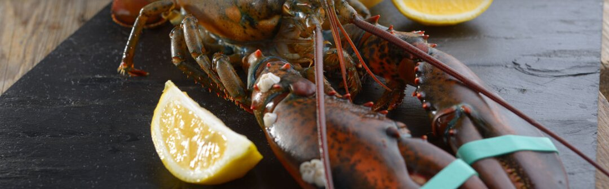

Receta de bogavante a la plancha
Uno de los platos más apreciados en la alta cocina
El bogavante a la plancha aporta altos valores nutricionales. Este marisco tiene un contenido de grasa muy bajo, solo 1,7 gramos, y a la vez aporta energía, omega-3, calcio, hierro, potasio y vitaminas A, B y E.
Ingredientes (para una o dos personas)
- Un bogavante
- Aceite de oliva
- Sal
- Perejil picado
- Ajo picado
Elaboración
- Cortar el bogavante a lo largo, de forma que queden dos mitades. Puede usarse un bogavante congelado o vivo.
- Cubrir la superficie de la plancha con el ajo picado, sal y aceite de oliva de manera uniforme.
- Salar el bogavante y colocarlo en la plancha ya caliente.
- Darle algunas vueltas, procurando que pase más tiempo boca abajo que boca arriba. Terminar con el perejil picado.
- Retirarlo del fuego cuando la carne parezca más compacta y algo separada del caparazón.
Puede servirse acompañado de verduras a la plancha, patatas o arroz blanco.